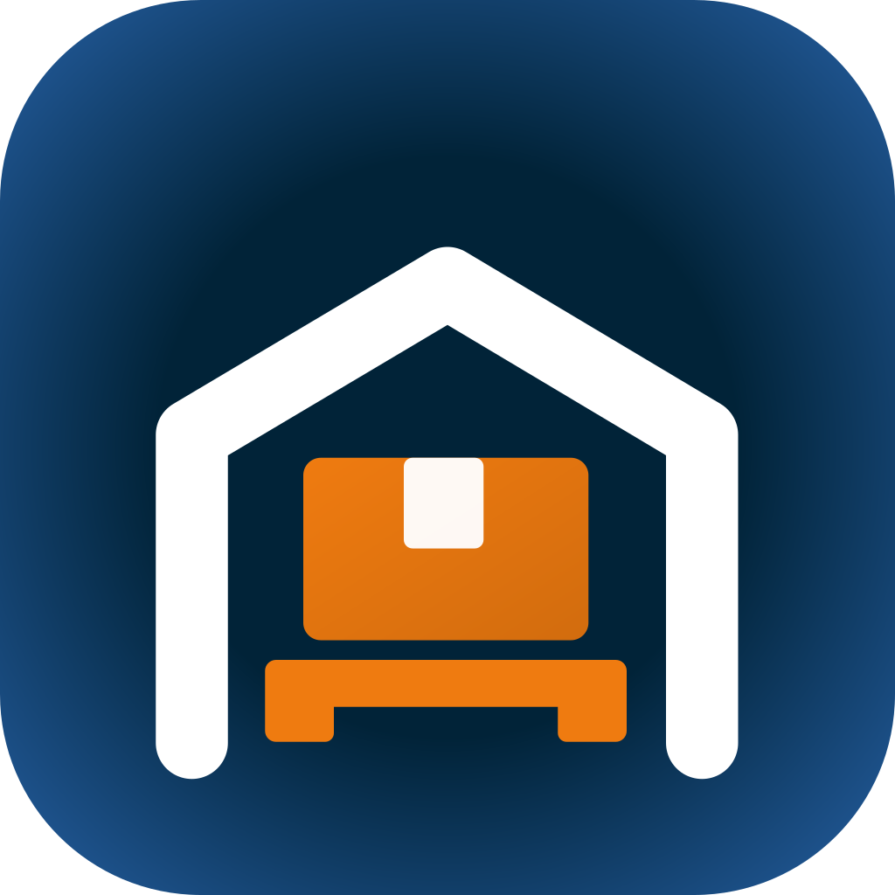

De onde vem
Todos os valores desta página vêm de pda-docs/05-design/03-sistema-de-design,
que os tira de core/design/Theme.kt. Nenhuma cor, tamanho ou folga foi
escolhido aqui. Quando um ecrã precisou de algo que o sistema não tem, ficou marcado
como acréscimo no fim de tokens.css — são três, e a única cor é o azul da palavra ROMAFE, que vem do GoParts.
<link rel="stylesheet" href="assets/css/tokens.css"> <!-- os valores -->
<link rel="stylesheet" href="assets/css/base.css"> <!-- as peças -->
<link rel="stylesheet" href="assets/css/arrumar.css"> <!-- só um fluxo -->
Ao contrário do sistema da entrada da ROMAFE, o PDA não tem tema escuro: o sistema de
design só define um jogo de cores, e por isso não há tema.js. Tem
português e inglês, com o traducao.js do GoParts.
O aparelho
Honeywell EDA61K, Android 11. O ecrã tem 480 × 800 píxeis a 240 dpi, que dão
320 × 533 dp. Em CSS, 1 px é 1 dp: um ecrã é
width: var(--ecra-l); height: var(--ecra-a), e as capturas de
importar/ saem a 1,5× para dar os píxeis reais.
O que se lê com o gatilho não tem botão no ecrã. Onde a pessoa tem de ler, aparece o leitor, e o botão secundário é a saída para quando a etiqueta não se lê.
O ícone da app
O armazém em traço branco, a caixa e a palete a laranja, e o nome por baixo. Há duas versões, e a diferença é o tamanho a que se vê: abaixo de uns 100 px as letras deixam de se ler, e o Android já escreve o nome da app por baixo do ícone.

| Ficheiro | Onde |
|---|---|
img/icone-app.svg | Loja de aplicações, documentos, apresentações — sempre em tamanho grande |
img/simbolo-app.svg | Ícone no Android, favicon destas páginas, e a faixa de cada ecrã |
As cores são as de tokens.css: o fundo vai do invertido ao azul da palavra
ROMAFE, e a caixa e a palete são o laranja de ação. Os dois SVG saem de
importar/icone.py, e os PNG de importar/gerar.sh.
Cor
Clica numa cor para copiar o token.
Marca
Superfície e texto
Estado
O estado nunca se diz só pela cor. Cada um tem cor, palavra e posição: um selo «Apertado» a vermelho diz «Apertado». É também por isso que, sem rede, a faixa não fica vermelha — escreve Sem ligação.
O laranja de ação não serve de texto: sobre branco dá 2,6:1. É fundo do botão principal e moldura da tarefa seguinte, e mais nada.
Tipografia
Roboto, a letra do Android, em woff2 dentro de assets/fonts/ — as páginas
abrem sem rede. Nove tamanhos: a distância entre body e
giant é o que separa ler de ver.
Espaço, forma e alvos
| Token | Valor | Para quê |
|---|---|---|
--r-sm | 6 dp | Volumes, opções da folha, teclas |
--r-md | 10 dp | Cartões, botões, alertas |
--r-lg | 14 dp | A folha de exceção |
--r-pill | 999 dp | Selos e barras de progresso |
--alvo | 48 dp | O mínimo de qualquer toque — e o das WCAG |
--alvo-lg | 62 dp | A ação principal de cada ecrã |
Faixa, barra e passos
A faixa diz quem está a trabalhar e se há rede, sempre no mesmo sítio. Por baixo, ou a barra de topo — nas listas — ou os passos — dentro de uma missão.
A faixa é também a saída do ecrã: à esquerda o voltar, à direita o chamar o gestor, nos mesmos 24 dp que o símbolo da app e o retrato ocupavam — a faixa não cresce, e o alvo de toque cresce por fora. O símbolo fica nos ecrãs de início, de onde não se volta a lado nenhum; o retrato fica onde não se chama o gestor: nos ecrãs dele, no «sem ligação» e no próprio chamar. Nos ecrãs com barra de topo é a barra que os leva, e aí o voltar tem a palavra escrita.
<div class="faixa">
<button class="faixa__voltar" data-ir="a1" data-sem-seta aria-label="Voltar">…</button> <!-- nos ecrãs de início: svg.faixa__icone -->
<span class="faixa__perfil">Arrumação</span>
<span class="faixa__nome">Marta Silva</span>
<span class="faixa__rede"><span class="faixa__ponto"></span>ligado</span> <!-- sem rede: faixa__rede--sem -->
<button class="faixa__chamar" data-ir="c1" data-sem-seta aria-label="Chamar o gestor">…</button>
</div>
<header class="topo">
<button class="topo__voltar" data-ir="e2" data-sem-seta>… Voltar</button>
<p class="topo__titulo">Consultar artigo</p>
<span class="topo__fim"><span class="faixa__rede topo__rede">…</span><button class="topo__chamar" data-ir="c1" data-sem-seta>…</button></span>
</header>Botões
Três temas, e o tema vem do papel da ação. A ação principal é uma por ecrã, laranja e com 62 dp. A alternativa é azul — «está ocupada», «outro problema». O recurso é transparente, com contorno azul — a saída: «não consigo ler», «já não está lá». Todos têm ícone, à esquerda do texto.
<button type="button" class="btn btn--acao"><svg class="btn__icone" …></svg>Ler a posição</button>
<button type="button" class="btn"><svg class="btn__icone" …></svg>Está ocupada</button>
<button type="button" class="btn btn--secundario"><svg class="btn__icone" …></svg>Não consigo ler — escrever</button>Desativado, o botão diz porquê no próprio rótulo. Um botão cinzento mudo lê-se como avaria.
Selo e alertas
<span class="selo selo--bom">Seguinte</span>
<div class="alerta alerta--aviso"><b class="alerta__titulo">Título</b>Explicação</div>Cartão, tarefa e leitor
Cada tarefa da fila diz porquê está naquela posição. É o que faz a pessoa confiar na ordem em vez de escolher.
Vazio e folha de exceção
O vazio é um componente e não um cuidado: se mostrar um vazio explicado custar mais do que não mostrar nada, alguém não mostra nada. A folha abre por cima do passo, com o passo ainda à vista, e nunca é obrigatória para avançar.
Não há nada na tua fila
Quando entrar trabalho para a arrumação, aparece aqui.
O que se passa?
Diálogo e aviso
Três coisas abrem por cima do ecrã, e não se trocam. A folha deixa escolher sem sair do passo. O diálogo pergunta, e só serve para o que não tem volta: fechar uma saída, mudar o stock de uma posição. O aviso não pergunta nada — diz o que o sistema fez sozinho e vai-se embora.
No diálogo são duas saídas, uma por linha, e a de fechar vem primeiro: é a que a pessoa veio fazer. O título repete o que vai acontecer, com o número — «Fechar a saída do DPD?», «Corrigir 60300302?» — e o texto diz o preço de dizer que sim. Nunca se usa para avisar: um diálogo que não se pode recusar é um ecrã, e faz-se como ecrã.
O aviso é uma linha, sem botão nenhum, no fundo do ecrã — a pessoa tem as mãos na palete e não vai tocar nele. Escuro para o que é informação (o motor deu trabalho), verde para o que correu bem e ficou guardado, vermelho para o que falhou. Se a pessoa tiver de fazer alguma coisa, não é um aviso: é um alerta dentro do corpo do ecrã, que fica.
Fechar a saída do DPD?
Faltam 2 volumes da G-24185. Se fechares, esses vão no camião seguinte e a guia fica incompleta.
Nos ecrãs: o diálogo é o 63 (fechar a saída) e o 64 (corrigir o stock); o aviso é o 65 (tarefa nova). A folha é o «O que se passa?» — 15, 36 e 49.
<div class="dialogo"> <!-- o véu, por cima do ecrã todo -->
<div class="dialogo__caixa">
<p class="dialogo__titulo">Fechar a saída do DPD?</p>
<p class="dialogo__texto">O que acontece se disseres que sim.</p>
<div class="dialogo__botoes">
<button class="btn btn--acao">Fechar mesmo</button> <!-- primeiro o que se veio fazer -->
<button class="btn">Voltar a carregar</button>
</div>
</div>
</div>
<div class="aviso"> <!-- aviso--bom, aviso--erro -->
<svg class="aviso__icone">…</svg>
<span class="aviso__texto">Tens uma tarefa nova: guia GA-4471</span>
</div>Modo normal e modo de treino
O ecrã é um só e está escrito uma vez. O que muda é quanto dele se vê. Em treino lê-se tudo: porque é que o motor deu aquela tarefa, o que acontece ao stock, porque é que a posição é aquela. Em normal fica o que serve a quem está a arrumar a terceira palete da manhã: a ordem, o número, a ação.
Nada se apaga ao trocar — quem esconde é o CSS. O modo vive no
<html data-modo>, e o editor tem o degrau para o alternar; também se
abre direto com #modo=treino. Por omissão vale normal,
porque é o ecrã verdadeiro: o de treino é o que se vê nas três primeiras semanas.
Duas classes e uma regra. .so-treino é o que só aparece a aprender;
.so-normal é o que, quando faz falta, o substitui a trabalhar. E, sem
ninguém lhes tocar uma a uma, .txt-legenda e .nota são
sempre de treino: por definição, são o que se explica.
O que não se faz é esconder a explicação atrás de um ⓘ. Experimentou-se no «Porquê aqui» do ecrã 11 e saiu no mesmo dia: um ícone sozinho não diz o que esconde, e quem está a aprender não vai lá tocar. Ou a frase serve e fica escrita, ou não serve e tira-se — meio caminho não há.
<p class="txt-legenda">…</p> <!-- some em modo normal, sem classe nenhuma -->
<p class="nota">…</p> <!-- idem -->
<span class="txt-sec so-treino">…</span> <!-- e o que se marca à mão -->Isto veio da revisão de 1 de outubro de 2026: o conteúdo que estava escrito era bom para explicar o conceito e a mais para o uso diário. Em vez de o cortar, deu-se-lhe um interruptor.
A resposta à leitura
É o gesto que mais se repete no turno, e quem o faz quase nunca está a olhar para o ecrã: tem a palete numa mão e o aparelho na outra. Por isso a resposta ocupa o ecrã todo, tem cor, e o aparelho acompanha-a com som e vibração. Verde e bip curto quando é a certa; vermelho, bip grave e vibração quando não é.
Não há botão pelo meio. A leitura certa diz logo o que se lê a seguir e segue sozinha; a errada fica no ecrã até se ler outra vez, e diz onde se devia estar. A linha do som e da vibração fica escrita no ecrã de propósito — é desenho, e tem de passar para o Kotlin com o resto.
Posição certa
60200201
Agora lê o ARTIGO
Bip curto
Não é esta posição
60200401
Devias estar em Z20 · C02 · P01
Vibração e bip grave
Nos ecrãs: 72 · Leitura certa e 73 · Leitura errada. Vale para todas as leituras, não só para a da separação.
E a posição, onde quer que apareça grande, lê-se como quem anda lá: Z30 · C03 · P01, com o código de oito algarismos pequeno por baixo para conferir com a etiqueta. O armazém — o 60 — não entra, que é sempre o mesmo.
Z30 · C03 · P01
Código 60300301
Números, progresso e espera
No chão do armazém lê-se o número, não a linha. Quando o que importa é uma conta — pedidas, tiradas, em falta —, cada parcela é um bloco com o nome pequeno por cima e o valor grande por baixo. A que falta é vermelha, a que já está é verde.
O progresso diz quanto já vai, em número e em barra, e vem sempre acompanhado da lista do que falta: saber que vão 18 de 22 não chega para ir buscar os outros quatro. A espera é a linha do tempo de um pedido ao gestor — enviado, visto, respondido —, para quem chamou não ficar a olhar para o teto.
Nos ecrãs: as contas no 33, o progresso no 47, a espera no 71 e no 76. O tempo que
falta ao camião — .passos__tempo — vive na cabeça da tarefa, ao pé do
nome da guia e não ao pé do nome de quem a faz: mede o processo, não a pessoa.
Do CSS ao Kotlin
O PDA é Compose e não HTML. O que se afina aqui leva-se para lá pelo nome, que é o mesmo dos dois lados.
| Aqui | Em core/design |
|---|---|
var(--c-acento) | cor Acento |
var(--t-giant) | tipo giant, 40 sp |
var(--e-lg) | espaço lg, 12 dp |
.btn--acao | AcaoPrincipal |
.cartao | Cartao |
.selo | Selo |
.faixa | Faixa |
.barra | BarraDeTopo |
.vazio | Vazio |
.dialogo | Dialogo |
.aviso | Aviso |
As outras peças — passos, leitor, alerta, tarefa, linha, folha — ainda não são componentes no sistema de design. Se ficarem nos ecrãs, é lá que têm de entrar.